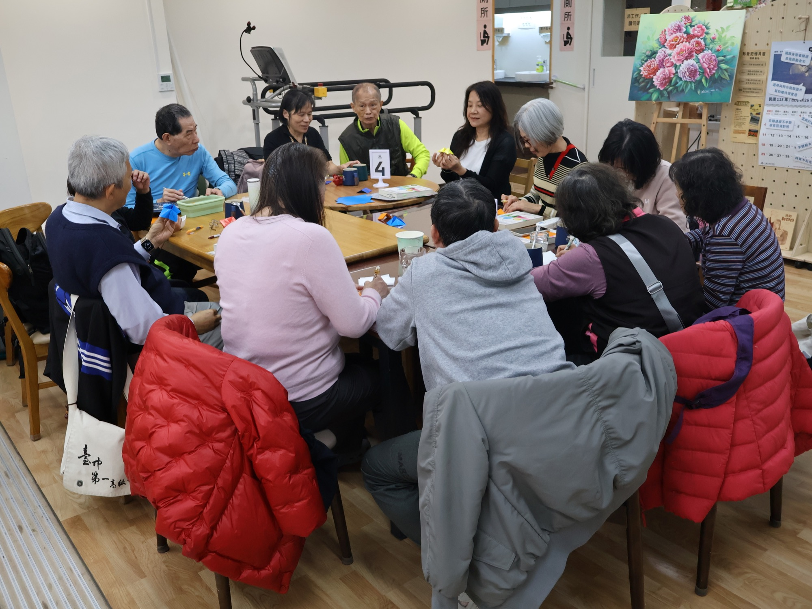
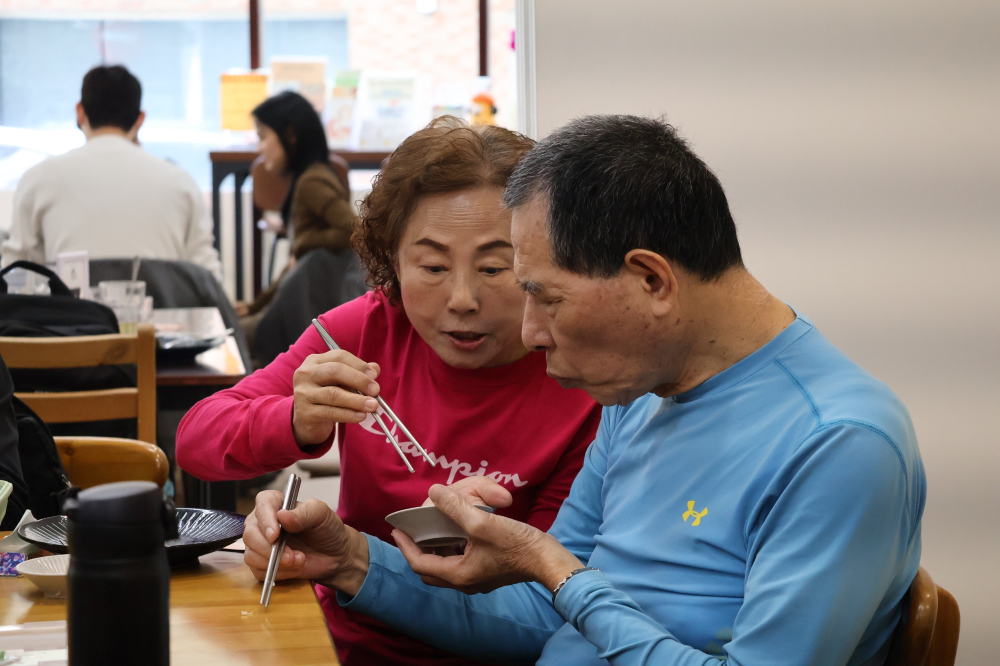

目前台灣年輕型失智症患者估計人數
記者陳少凡、陳雙、顏貝恩、黃暐喬報導
未能實現的
工作權
多數年輕型失智症患者仍處於工作與承擔家庭責任的階段。疾病改變了他們的能力，社會與職場卻往往在理解之前，先把他們排除在外。
Young 咖啡坊工作現場｜攝影／採訪團隊
往下閱讀
失智症，不只是
老人家的事。
65 歲以前發病的「年輕型失智症」案例逐年受到關注。患者多處於中壯年階段，往往同時肩負工作、家庭照顧與經濟責任；一旦失能，影響的不只是個人，也牽動整個家庭、勞動力與社會支持體系。
失智症盛行率；推估 2021 年台灣有 11,324 人
2021 年底推估共 312,166 人，占全國人口 1.34％
台灣平均每 74 人，就有 1 人是失智者
＊ 資料來源：國際失智症協會；內政部 2021 年 12 月底人口統計；挪威 2019 年研究之 45–64 歲失智症盛行率推估。
疾病來得比
想像中更早
有些病患在 65 歲之前便已發病，我們稱之為早發性失智症（Early-onset dementia），或年輕型失智症（Young onset dementia）。
年輕型失智症不是單一疾病，而是依「發病年齡」命名。與高齡失智相比，病因分布更分散，因此釐清類型尤其重要。
往下滑，看四種常見病因如何影響腦部與日常。
同樣叫失智，
受影響的位置不一樣

海馬迴、內嗅皮質形成新記憶的重要區域
大腦皮質後期影響語言、推理與社會行為

腦血管損傷血流受阻使腦組織缺氧
損傷位置不固定症狀依位置與範圍而異

額葉判斷、計畫、抑制與社會行為
顳葉語言、語意、記憶與情緒

腦室系統腦脊髓液在此循環
腦室擴大可能壓迫周邊腦組織
阿茲海默症
疾病通常先破壞與記憶有關的神經連結，包括海馬迴與內嗅皮質；之後逐漸擴及掌管語言、推理及社會行為的大腦皮質。
近期記憶方向感語言推理判斷
血管性失智症
腦中風或小血管病變會減少腦部血流，損害可能散落在不同腦區。症狀取決於受損的位置與大小，也可能在一次次血管事件後呈階梯式惡化。
注意力計畫組織判斷語言或動作
額顳葉型失智症
額葉與顳葉的神經細胞受損、腦葉逐漸萎縮。早期未必先出現健忘，反而可能是人格與社交行為改變，或說話、理解語意變得困難。
人格行為情緒控制語言執行功能
可治療的失智症狀
「可逆性失智症」不是單一病名，而是一群可能改善的原因。圖中以正常壓力水腦症為例：腦室因腦脊髓液累積而擴大，可能同時出現走路不穩、認知下降與尿失禁。
憂鬱症、藥物副作用、甲狀腺功能異常、維生素 B12 缺乏等也可能造成類似失智的表現，應由醫療團隊完整評估。
及早鑑別處理病因症狀可能改善
圖像為腦區與病理概念示意，不等同個別患者的影像診斷。資料參考： 美國國家老化研究院（阿茲海默症）、 美國中風協會（血管性失智症）、 美國國家老化研究院（額顳葉型失智症）、 美國國家神經疾病暨中風研究院（正常壓力水腦症）。

「我還是想要工作」
「但是他們都不希望我去公司上班，擔心我沒辦法勝任。但我也沒辦法拿出證據反駁他們。」
41 歲的小華在中風後被診斷為血管性失智症。公司沒有解雇他，而是將他從第一線居服員調整為在家處理排班與行政事務。
他仍領有薪資，也維持員工身分，工作方式卻與過去截然不同。大部分時間，他待在家裡看網路小說、滑手機或打電動。「我現在在家裡就是這樣，很擔心、閒得發慌。」對他而言，問題不只有沒有收入，而是能否回到熟悉的生活節奏。
同為失智症，
每個人的變化不同
年輕型失智症不一定先從忘記事情開始。有人失去時間感，有人難以控制語言與情緒，也有人逐漸無法做出過去熟悉的決定。
華
41 歲｜血管性失智症
小華：我還是想要工作
「我喜歡工作，因為沒有工作的話，我每天都待在家裡。」
中風後，公司將他從第一線居服員調整為在家處理排班與行政事務。他仍有薪資與員工身分，卻失去原本的工作節奏。他持續投遞履歷、參與評估，等待一個重新證明自己的機會。
喜
61 歲｜血管性失智症
喜哥：想說的話，變成失控的表達
情緒起伏時，他可能突然爆出髒話、神情緊繃，甚至出現衝動的肢體反應。
在電影分享會裡，他也會主動回應感興趣的話題，以握手、拍手表達認同。但當情緒波動，內心感受與外在表現可能完全相反，也因此更容易在日常互動中被誤解。
暉
罹病 18 年｜血管性失智症
邱孟暉：穿梭在混亂的時間裡
年齡從「70 幾歲」改成「66 歲」，再到「69 歲」、「70 歲」，答案隨著記憶反覆更動。
今天是星期幾、做過哪些事，有時也需要停下來想一想，或由妻子用動作與手勢提醒。兩人在一來一往的對話中，慢慢拼湊出日常。
仁
從公司經營者到被照顧者
林善仁：失去決策與動手能力
「本來我要照顧你的，但現在變成要你照顧我。」
過去負責公司決策，也習慣修理家中大小事；確診後，他逐漸無法判斷與行動。一次深夜水龍頭漏水，他反覆檢查卻修不好，只能默默回到房間。能力的轉變，也讓公司營運與家庭角色一起改變。
留在身邊的
六件日常物品
一件平常的東西，記錄疾病如何進入工作、關係與生活。
曾擔任汽車銷售員的喜哥回憶，隨著病情逐漸惡化，他開始無法妥善掌握工作的時間安排，也難以應對不同客戶的需求。直到一場突如其來的車禍，讓他確診罹患年輕型失智症，也被迫告別熱愛多年的汽車銷售工作。雖然無法再回到職場，喜哥對汽車的熱情卻從未消失，至今仍會閱讀汽車雜誌、關注最新的汽車資訊。他最懷念的，不僅是汽車銷售工作本身，更是每天奔波拜訪客戶、與不同客戶交流互動的生活節奏。對他而言，那段日子已成為難以重返的回憶。
喜哥妻子提及，喜哥曾在觀看電視購物節目時，被節目中的優惠方案吸引，認為「買越多越划算」，便自行撥打購買專線下單。事後，喜哥妻子看見家用電話放在一旁，便詢問喜哥是否有來電；喜哥已全然忘記自己剛才曾訂購商品，告訴她沒有來電，口中卻不斷講述自己購買的方案。喜哥妻子發現事情不對勁後，立即聯繫業者並說明喜哥罹患失智症的情況，所幸對方理解並協助取消訂單。
由於失智症會導致短期記憶衰退，邱孟輝也摸索出屬於自己的記憶方式。他參考台北 101 夜間燈光每天不同的顏色，依照「紅、橙、黃、綠、藍、靛、紫」的順序搭配每天穿著的衣服，藉此提醒自己今天是星期幾。他笑著說，這不是什麼特別的創意，只是向台北 101「借來」的小技巧，卻成了自己維持日常生活的重要依靠。邱孟輝的妻子也表示，失智症患者最常見的症狀就是短期記憶受損，同一個問題可能在短短幾分鐘內重複詢問好幾次，因此照顧者更需要以耐心與同理心陪伴，而不是因反覆提問感到不耐。
佳祥曾是一名八方雲集的計時人員，直到因為腦內疾病與小中風接受手術，加上血管狀況不佳，經常出現頭暈症狀，才不得不離開工作崗位。確診之後，他的生活節奏也變得緩慢許多。佳祥平時大多待在家中，喜歡賞花的他偶爾會到住家附近的公園散步。有時在妹妹的邀請下，他也願意一起出門逛街，或到較遠的地方走走。這些看似平凡的日常，如今都成為他珍惜的生活片段。
小華認為自己的生活與工作能力並未受到太大影響，甚至直言：「只要我自己不說，其他人都看不出來，我有失智症。」然而，疾病帶來的影響並非全然不可見。據志工轉述，小華的妻子曾提及，由於其他健康因素，小華被限制不能吃零食，卻曾在賣場內尚未完成結帳便拆開零食食用。事後面對店員詢問時，他否認自己曾有相關行為。這些情況顯示，失智症可能正逐漸影響小華的判斷能力與對自身行為的認知。
劉鳳蓮的丈夫林善仁確診後，家人為了維護他的自尊，總是盡可能讓他保有生活中的角色。例如劉鳳蓮會藉口自己提不動菜，邀請他一同到菜市場買菜，並不斷告訴他「有你真好」。然而，隨著病情惡化，林善仁開始出現失禁症狀。一次返家途中，林善仁突然說想上廁所，卻遲遲沒有邁開腳步，劉鳳蓮這才發現他早已尿濕褲子。即使如此，林善仁依然拒絕穿上尿布生活。劉鳳蓮表示，一位正值壯年的男性，要接受自己逐漸失去對身體的控制，遠比接受疾病本身更加困難。


還清醒著，
卻逐漸被排除
對輕度失智者而言，需要的往往不只是生活照顧，而是被肯定、繼續參與社會，並找回自身價值。
專屬據點，全台僅兩處
目前專門提供年輕型失智症服務的據點相當有限，主要為台北 Young 記憶會館與台中向上清活小屋。服務距離與交通成本，也讓持續參與成為負擔。
台北｜Young 記憶會館台中｜向上清活小屋
他們需要的，不只是生活照顧
相較於高齡患者多以生活照顧為主，年輕患者通常仍具一定自理能力，更需要維持社交參與、建立生活重心與延緩功能退化。
據點透過分享對話、繪畫拼貼、觀影、瑜珈與音樂等課程，提供患者交流、維持認知功能，以及建立規律生活與人際互動的機會。
有需求，卻未必符合資格
向上清活小屋目前的收案條件，將疾病程度與長照等級都畫出了界線。
CDR 0.5–1臨床失智症評估量表
未達第 3 級長照 3 級（含）以上不收案
「現在 CDR 一定要是 0.5 到 1 分才能收，如果是 2 分就不能收；另外，如果長照等級超過 3（包含 3），我們也沒辦法服務、不能收案。」—— 向上清活小屋工作人員 王姿穎
隨著收案標準限縮，部分仍有需求的患者可能因資格不符，無法進入據點接受支持，也反映出台灣年輕型失智症照顧資源仍有不足。


「在接受這個事情的過程中，心裡非常掙扎與疲憊，情緒也近乎崩潰。」
—— 喜哥妻子
照顧者也困在
反覆的日常裡
喜哥確診後，妻子失去原先的社交生活，生活主軸都圍繞著丈夫，身體也曾多次亮起紅燈。患者在公共空間難以控制行動與語言，旁人的眼光、如廁與走失風險，都讓家屬不敢輕易帶他們外出。
向上清活小屋曾帶患者到高雄出遊。活動結束後，許多家屬說，那是患者生病後第一次離開台中。對照顧者而言，這是喘息；對患者而言，則是重新與社會互動的機會。

在咖啡坊裡，
重新被需要
Young 咖啡坊每週開放一天，讓失智症患者實際參與咖啡廳的運作。從沖煮咖啡、接受點單到送餐，他們在一項項基本服務中，重新練習工作與人際互動。
這並非正式職場中的工作，卻是真實的勞動與交流。與顧客互動的過程，讓患者重新建立與他人的連結，也一點一點找回「自己仍被需要」的感受。
沖煮咖啡接受點單送餐服務顧客互動

患者想工作，
社會準備好了嗎？
「我還是想要工作啊，但是他們都不希望我去公司上班。」—— 小華
多數年輕型失智症患者仍處於為事業打拚的年齡，工作不只是收入，也是身分、尊嚴與社會連結。然而，目前台灣針對失智症患者的就業支持依舊相當有限。
01
措施存在，支持仍未接上
現行已有職務再設計、失智者就業推動計畫與失智友善職場等措施，但就業媒合多以肢體障礙者為主，針對認知障礙者的穩定支持模式仍然不足。
02
確診以前，可能已被職場淘汰
企業普遍缺乏對年輕型失智症的正確認知。患者可能先被視為效率下降、頻繁出錯，甚至在確診之前便因工作表現改變而遭到資遣。
03
改變工作，而不是先排除人
將流程拆成簡單步驟、降低工作複雜度，或使用數位工具提醒，都能協助患者發揮仍保有的能力。隨病程變化，職務設計與訓練也必須更具彈性與專業性。
04
企業需要一套可執行的方法
政府仍需建立年輕型失智症的職務再設計指引、培訓專業人才，並加強宣導與倡議，降低企業因追求效率而產生的聘用疑慮。
邱惠玲｜臺北醫學大學高齡健康暨長期照護學系主任失智症患者並非完全失去工作能力，而是需要適當的職務調整與支持。現有制度與企業現場之間，仍缺乏針對認知障礙者建立的穩定支持模式。
郭慈安｜中山醫學大學醫學系副教授勞動部需要建立年輕型失智症患者的職務再設計指引與專業人才培訓，也應加強社會與企業溝通，讓仍具工作能力的患者有機會留在職場。